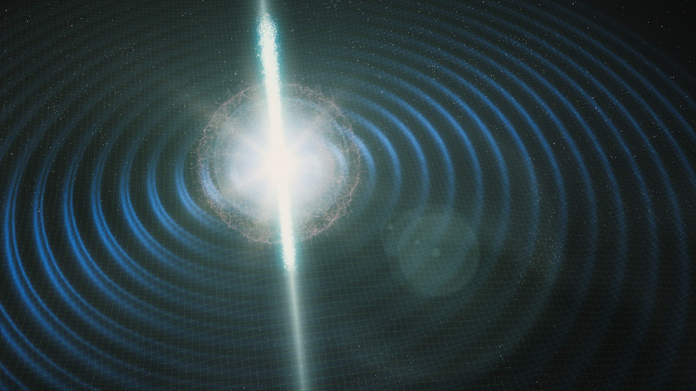

Gravitational Waves Cosmology
 Credit:FermilabThe amplitude of Gravitational Waves (GWs) depends on the chirp Mass and luminosity distance. Thus it can work like the standard candel, a perfect measure to the luminosity diatance. We call it the standard siren. However, redshift is degenerated with the chirp mass. According to how to obtain redshift measurement, The standard siren can be divided into two catogories: bright siren(with EM counterpart) and dark siren(without EM counterpart).
For bright sirens, it's easy to get the redshift information by identifying the host galaxies with the EM counterparts. The well-known GW event, GW170817, is a bright siren, with its host galaxy NGC4993 at z~0.01.
Unfortunately it's very rare to detect the GW signal and the EM counterpart at the same time. We have to deal with dark siren for most of the time. Basically there're two ways to measure redshift. One makes use of the statistical distribution of tha galaxies catalog and requires high accuracy sky localization by GW. The other utilize the tidal effect of binary neutron stars to break the degeneacy between mass and redshift. I'm currently working on this method.
Fast sky localization
When I was an undergraguate, I visited Prof. Linqing Wen at University of Western Australia for 3 months. There I carry out some research on the bayesian method of GW source sky localization. After sampling on the extrinsic parameters, I chose a Gaussian distribution to approximate the real prior. With this Gaussian prior, I find an solution for the posterior of sky position.
My friend Qian Hu continued this project and he changed the prior approximation. Improved it.
GW Memory effect
GWs would leave permanent imprint on spacetime. For example, the displacement between free falling particles would be permanently changed after GWs pass through. I found it's a very fasinating effect and I'd like to do some research on it if possible.
GW polarizations
In General Relativity, there're only 2 polarizations of GWs, the '+' and 'x'. However in other theory of gravity, there would be up to 6 polarizations totally. This is another topic I'd like to do in the future.